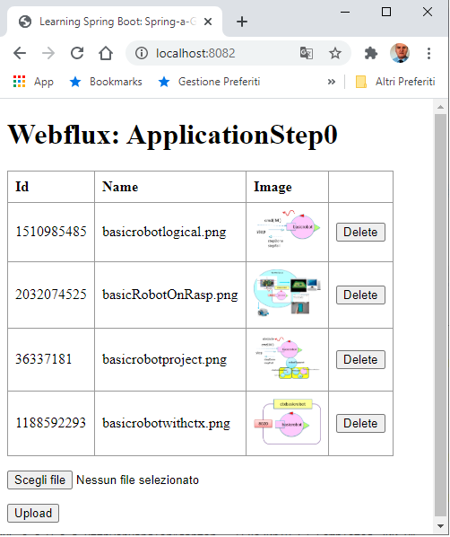
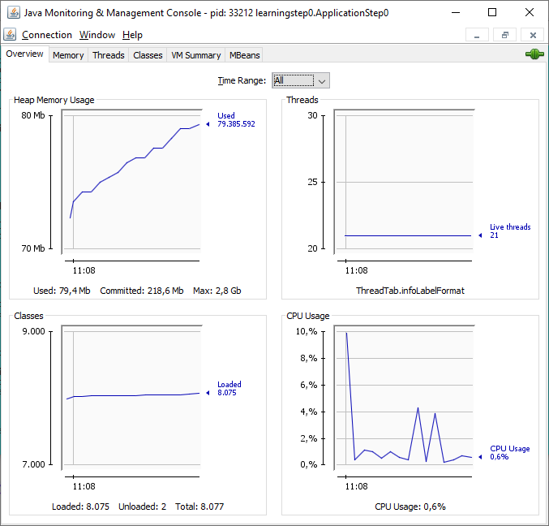

LabSpringIntro | Introducion to WebFlux
About Reactor
- Reactor 3 Reference Guide (R3RFG)
-
R3RFG | 3. Introduction to Reactive Programming
(Iterable, Asynchronicity, Callbacks, Futures, CompletableFuture, Backpressure, Operators, Hot vs Cold)
-
R3RFG | 4. Reactor Core Features
(Publisher, Flux, Mono, subscribe, Disposable, BaseSubscriber, ...)
-
R3RFG | 4.4. Programmatically creating a sequence
(generate, create, push, handle, concurrency-agnostic, Scheduler, publishOn, subscribeOn, onError, retry, Handling Exceptions,
Processor, Sink, Available Processors (Direct,Unicast,Emitter,Replay))
-
R3RFG | 4.5. Threading and Schedulers
(concurrency-agnostic, Scheduler, publishOn, subscribeOn, ))
-
R3RFG | 4.6. Handling Errors
(onError, retry, Handling Exceptions )
-
R3RFG | 4.7. Processors
(Processor, Sink, Available Processors (Direct,Unicast,Emitter,Replay))
-
R3RFG | 9.2. Hot Versus Cold
(Processor, Sink, Available Processors (Direct,Unicast,Emitter,Replay))
- Guide to Spring 5 WebFlux (Baeldung)
- Spring WebFlux Tutorial (HowToDoInJava)
From Dave Syer (Founder of Spring Cloud, Spring Boot, ...)
- Notes on Reactive Programming Part I: The Reactive Landscape
- Notes on Reactive Programming Part II: Writing Some Code
- Notes on Reactive Programming Part III: A Simple HTTP Server Application
- Use Flux to Group, Shape, and Analyze Your Time Series Data
-
InfluxData’s new functional data scripting language
- RxJava vs Reactor
- Simple Event Driven Microservices with Spring Cloud Stream
About Hooks.onOperatorDebug
R3RFG | 7.2. Activating Debug Mode - aka tracebacks
In reactor,
Hooks.onOperatorDebug() instruments the Reactor operators to collect more information about
the current stack during the execution. This has a performance cost, and should not be done in production.
This is a static call that needs to be done only once per JVM execution, so no need to repeat it for every controller call.
With Spring Boot, this is done automatically for you is you have the spring-boot-devtools dependency on classpath.
Since Spring Boot 2.1, you can get better logs for web-related operations by setting to DEBUG the web logging group,
so
logging.level.web=debug. This will log useful information about web requests processing.
About Spring events (to remove???)
Examples
R3RFG | 4. Reactor Core Features
The Reactor project main artifact is reactor-core, a reactive library that focuses on the
Reactive Streams specification and targets Java 8.
Reactor introduces composable reactive types that implement
Publisher but also provide a rich vocabulary of operators:
Flux and Mono.
A
Flux object represents a reactive sequence of
0..N items,
while a
Mono object represents a single-value-or-empty
(0..1) result.
Flux and Mono
The examples are reported in
ReactorDemo.java
public void demoMono() {
Mono mono1 = Mono.empty();
Mono mono2 = Mono.just("Bob");
mono1.subscribe( item -> System.out.println("demoMono: " + item) );
mono2.subscribe( item -> System.out.println("demoMono: " + item) );
}
|
R3RFG Mono:
- A Mono<T> is a specialized Publisher<T> that emits at most one item and then (optionally) terminates with an
onComplete signal or an onError signal.
|
public void demoFlux() {
int n = 0;
Flux flux1 = Flux.just("A"+ n++, "B" + n++, "C"+ n++);
Flux flux2 = Flux.fromArray(new String[]{"A"+ n++, "B" + n++, "C"+ n++});
Flux flux3 = Flux.fromIterable(Arrays.asList("A"+ n++, "B" + n++, "C"+ n++));
flux1.subscribe( item -> System.out.println("demoFlux - 1: " + item) );
flux1.subscribe( item -> System.out.println("demoFlux - 1: " + item) );
flux2.subscribe( item -> System.out.println("demoFlux - 2: " + item) );
flux2.subscribe( item -> System.out.println("demoFlux - 2: " + item) );
flux3.subscribe( item -> System.out.println("demoFlux - 3: " + item) );
}
|
R3RFG Flux:
- A Flux<T> is a standard Publisher<T> that represents an asynchronous sequence of 0 to N emitted items,
optionally terminated by either onComplete signal or an onError signal.
R3RFG | 9.2. Hot Versus Cold:
- just is an example of the few hot operators in Reactor.
It directly captures the value at assembly time and replays it to anybody subscribing to it later.
|
Generators
R3RFG | 4.4.1. Synchronous generate
public void demoFluxGen0() {
Flux flux = Flux.generate(
() -> 0, //initial state value
(state, sink) -> {
sink.next("3 x " + state + " = " + 3*state);
if (state == 10) sink.complete();
return state + 1; //a new state for the next invocation
});
flux.subscribe( item -> System.out.println("demoFluxGen0 - 1: " + item) );
flux.subscribe( item -> System.out.println("demoFluxGen0 - 2: " + item) );
}
|
R3RFG | 4.4.1. Synchronous generate (Example 4.11):
the generate method takes a generator function.
|
public void demoFluxGen1() {
Flux flux = Flux.generate(
(AtomicLong::new, //a mutable object as the state
(state, sink) -> {
long i = state.getAndIncrement(); //mutate the state
sink.next("3 x " + i + " = " + 3*i);
if (i == 5) sink.complete();
return state; //return the same instance as the new state
});
flux.subscribe( item -> System.out.println("demoFluxGen1 - 1: " + item) );
flux.subscribe( item -> System.out.println("demoFluxGen1 - 2: " + item) );
}
|
R3RFG | 4.4.1. Synchronous generate (Example 4.12):
using a single AtomicLong as the state, mutating it on each round.
|
public void demoFluxGen2() {
Flux flux = Flux.generate(
(AtomicLong::new, //a mutable object as the state
(state, sink) -> {
long i = state.getAndIncrement(); //mutate the state
sink.next("3 x " + i + " = " + 3*i);
if (i == 5) sink.complete();
return state; //return the same instance as the new state
}), (state) -> System.out.println("state: " + state));
flux.subscribe( item -> System.out.println("demoFluxGen2 - 1: " + item) );
flux.subscribe( item -> System.out.println("demoFluxGen2 - 2: " + item) );
}
|
R3RFG | 4.4.1. Synchronous generate (Example 4.12, with a consumer):
the Consumer lambda could close a connection or handle any tasks that should be done at the end of the process.
|
create and push
public void demoCreate0() {
Flux bridge = Flux.create(
emitter -> { //emitter type= Consumer<? super FluxSink<String>>
for (int i = 0; i < 3; i++) {
emitter.next(String.valueOf(i));
}
});
bridge.subscribe(item -> System.out.println("demoCreate0 - 1: " + item));
bridge.subscribe(item -> System.out.println("demoCreate0 - 2: " + item));
}
|
R3RFG | 4.4.2. Asynchronous and Multi-threaded: create
create is a more advanced form of programmatic creation of a Flux which is suitable for
multiple emissions per round, even from multiple threads.
|
public void demoPush0() {
Flux bridge = Flux.push(sink -> {
new Thread() {
int n = 0;
public void run() {
while( n < 5 ) {
sink.next("a" + n++);
try {
Thread.sleep(500);
} catch (InterruptedException e) {
e.printStackTrace();
}
}//while
sink.complete();
}//run
}.start();
});
bridge.subscribe( item -> System.out.println("demoPush0 - 1: " + item));
bridge.subscribe( item -> System.out.println("demoPush0 - 2: " + item));
}
|
R3RFG | 4.4.3. Asynchronous but single-threaded: push
push is a middle ground between generate and create which is suitable for processing events from a single producer
|
|
|
|
Hot publishers
public void demoHot0() {
DirectProcessor hotSource = DirectProcessor.create();
Flux hotFlux = hotSource.map(String::toUpperCase);
hotFlux.subscribe(d -> System.out.println("Subscriber 1: "+d));
hotSource.onNext("blue");
hotSource.onNext("green");
hotFlux.subscribe(d -> System.out.println("Subscriber 2: "+d));
hotSource.onNext("orange");
hotSource.onNext("purple");
hotSource.onComplete();
}
|
R3RFG | 9.2. Hot Versus Cold
Hot publishers do not depend on any number of subscribers.
They might start publishing data right away and would continue doing so whenever a new Subscriber comes in
(in which case, the subscriber would see only new elements emitted after it subscribed).
For hot publishers, something does indeed happen before you subscribe.
|
Functional programming style
Building Applications
Start-up
- Connect to https://start.spring.io/
- Select Gradle Project, Java, Group=it.unibo, Artifact=HealthAdapterFacade
(Options:Packaging=Jar, Java=8), Dependencies:
- Spring Boot DevTools
- Spring WebFlux //Reactive
- Thymeleaf //For m2m interaction
- Lombok //Java annotation library which helps to reduce boilerplate code
- Spring Boot Actuator //monitor and manage the application
Read
Spring: Building Java Projects with Gradle
and look at build.gradle.
- Click on Generate, unzip the generated file into your working dir and update
and
application.properties (port=8082):
- Set some logo for human-to-machine (h2m) interaction and for machine-to-machine (m2m) interaction
- Set endpoint management
- Enables spring.jmx
- Use patorjk.com/software/taag
to change the logo in file banner.txt
ApplicationStep0
- A set of images is stored in the directory
upload-dir
- Define in templates a GUI page:
index.html for h2m interaction
- Define (see
Build Reactive REST APIs With Spring WebFlux and
Build RESTful Services with Spring Boot 2.X in Few Steps
):
- HumanInterfaceController.java
shows such a set of images
through the HTML page index.html
and allows an user to add an image to the set by uploading a file. Moreover it provides:
@PostMapping(value = BASE_PATH)
public Mono createFile(
@RequestPart(name = "file") Flux files)
|
To create a new images by using a
ImageService.java that in its turn uses
Image.java
|
-
MachineInterfaceController.java
Provides a method to get the set of images
@GetMapping(API_BASE_PATH + "/images")
Flux images(){ ...
|
curl localhost:8082/api/images | python -m json.tool
//ON WINDOWS 10
OUTPUT:
[
{
"id": 1510985485,
"name": "basicrobotlogical.png"
},
{
"id": 2032074525,
"name": "basicRobotOnRasp.png"
},
...
]
|
Provides a method to create an image given ... TODO
@PostMapping(API_BASE_PATH + "/images")
Mono create(@RequestPart Flux images) { ...
|
|
|
|
-
Run
ApplicationStep0.java and then:
activate localhost:8082:

|
Run
JConsole

|
Run localhost:8082/images/basicrobotlogical.png/raw:

Immagine dopo modifica del colore di sfondo (nero)
|
By AN Unibo-DISI
|